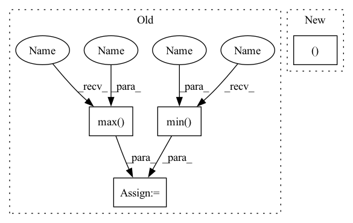

Pattern ID :15925

Before Change
if fixed_size is not None:
size = [fixed_size[1], fixed_size[0]]
else:
min_size = torch.min(im_shape).to(dtype=torch.float32)
max_size = torch.max(im_shape).to(dtype=torch.float32)
scale = torch.min(self_min_size / min_size, self_max_size / max_size)
if torchvision._is_tracing():
scale_factor = _fake_cast_onnx(scale)
After Change
if torchvision._is_tracing():
new_unpad = _tracing_item_onnx(ratio_h), _tracing_item_onnx(ratio_w)
else:
new_unpad = int(ratio_h.item()), int(ratio_w.item())
image = F.interpolate(image[None], size=new_unpad, mode="bilinear", align_corners=False)[0]
if target is None:
In pattern: SUPERPATTERN
Frequency: 4
Non-data size: 4
Instances
Fragment ID: 53688787
Project Name: zhiqwang/yolov5-rt-stack
Commit Name: cd1a6ec7cda09de0dc92962a37ecb4f723a8dfeb
Time: 2022-02-03
Author: 92794867+q3394101@users.noreply.github.com
File Name: yolort/models/transform.py
M Class Name: AnonimousClass
N Class Name: AnonimousClass
M Method Name: _resize_image_and_masks(3)
N Method Name: _resize_image_and_masks(5)
M Parent Class:
N Parent Class:
M File Name: yolort/models/transform.py
N File Name: yolort/models/transform.py
M Start Line: 257
M End Line: 286
N Start Line: 67
N End Line: 77
'>
Before Change
if fixed_size is not None:
size = [fixed_size[1], fixed_size[0]]
else:
min_size = torch.min(im_shape).to(dtype=torch.float32)
max_size = torch.max(im_shape).to(dtype=torch.float32)
scale = torch.min(self_min_size / min_size, self_max_size / max_size)
if torchvision._is_tracing():
scale_factor = _fake_cast_onnx(scale)
After Change
ratio_w = torch.round(im_shape[1] * ratio).to(dtype=torch.int32)
if torchvision._is_tracing():
new_unpad = _tracing_item_onnx(ratio_h), _tracing_item_onnx(ratio_w)
else:
new_unpad = int(ratio_h.item()), int(ratio_w.item())
image = F.interpolate(image[None], size=new_unpad, mode="bilinear", align_corners=False)[0]
'>
Fragment ID: 53688790
Project Name: zhiqwang/yolov5-rt-stack
Commit Name: cd1a6ec7cda09de0dc92962a37ecb4f723a8dfeb
Time: 2022-02-03
Author: 92794867+q3394101@users.noreply.github.com
File Name: yolort/models/transform.py
M Class Name: AnonimousClass
N Class Name: AnonimousClass
M Method Name: _resize_image_and_masks(3)
N Method Name: _resize_image_and_masks(5)
M Parent Class:
N Parent Class:
M File Name: yolort/models/transform.py
N File Name: yolort/models/transform.py
M Start Line: 257
M End Line: 286
N Start Line: 67
N End Line: 77
'>
Before Change
def _regplot(x, y, ax, ci=None, line_color=None, fill_color=None):
grid = np.linspace(np.min(x), np.max(x), 100)
x = np.c_[np.ones(len(x)), x]
grid = np.c_[np.ones(len(grid)), grid]
yhat = grid.dot(reg_func(x, y))
ax.plot(grid[:, 1], yhat, color=line_color)
if ci:
boots = bootdist(reg_func, args=[x, y], n_boot=1000).T
yhat_boots = grid.dot(boots).T
err_bands = _ci(yhat_boots, ci, axis=0)
After Change
def _regplot(x, y, ax, ci=None, line_color=None, fill_color=None):
grid, yhat, err_bands = _regplot_paras(x, y, ci)
ax.plot(grid[:, 1], yhat, color=line_color)
'>
Fragment ID: 53688795
Project Name: atrcheema/dl4seq
Commit Name: ada05fddfec7d3fe7900ffa98fd44e1c5270e43a
Time: 2022-01-12
Author: ather_abbas786@yahoo.com
File Name: ai4water/utils/easy_mpl.py
M Class Name: AnonimousClass
N Class Name: AnonimousClass
M Method Name: _regplot(6)
N Method Name: _regplot(6)
M Parent Class:
N Parent Class:
M File Name: ai4water/utils/easy_mpl.py
N File Name: ai4water/utils/easy_mpl.py
M Start Line: 205
M End Line: 222
N Start Line: 238
N End Line: 246
'>
Before Change
self.C = np.maximum(self.C, self.C.T)
self.eigenvalues, self.eigenbasis = np.linalg.eigh(self.C)
self.eigenvalues = np.real(self.eigenvalues)
self.eigenbasis = np.real(self.eigenbasis)
self.condition_number = (np.max(self.eigenvalues) /
np.min(self.eigenvalues))
self.invsqrt = (self.eigenbasis *
(1 / np.sqrt(self.eigenvalues))) @ self.eigenbasis.T
After Change
if current_eval <= self.updated_eval + lazy_gap_evals:
return
(self.C, self.eigenvalues, self.eigenbasis, self.condition_number,
self.invsqrt) = self._update_eigensystem_numba(self.C)
self.updated_eval = current_eval
'>
Fragment ID: 53688760
Project Name: icaros-usc/pyribs
Commit Name: ffff0cea3e7747c5ef9d8a858e2ea71bd60f8ef8
Time: 2021-01-21
Author: bryon@btjanaka.net
File Name: ribs/emitters/opt/_cma_es.py
M Class Name: DecompMatrix
N Class Name: DecompMatrix
M Method Name: update_eigensystem(3)
N Method Name: update_eigensystem(3)
M Parent Class:
N Parent Class:
M File Name: ribs/emitters/opt/_cma_es.py
N File Name: ribs/emitters/opt/_cma_es.py
M Start Line: 27
M End Line: 38
N Start Line: 46
N End Line: 47